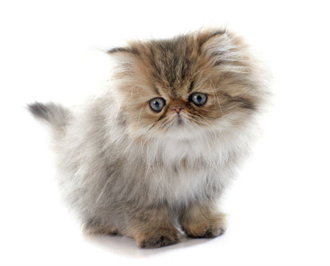

Persians 39.99$
Persian cats A distinctive feature of the Persian breed of cats is a small, broad and snub nose. You can also note short and muscular legs. Types of Persian cats with a very small, snub nose are called "extreme", and species from a relatively long and slightly snub nose - "classical." The first are more popular in the US, the latter - in Europe.